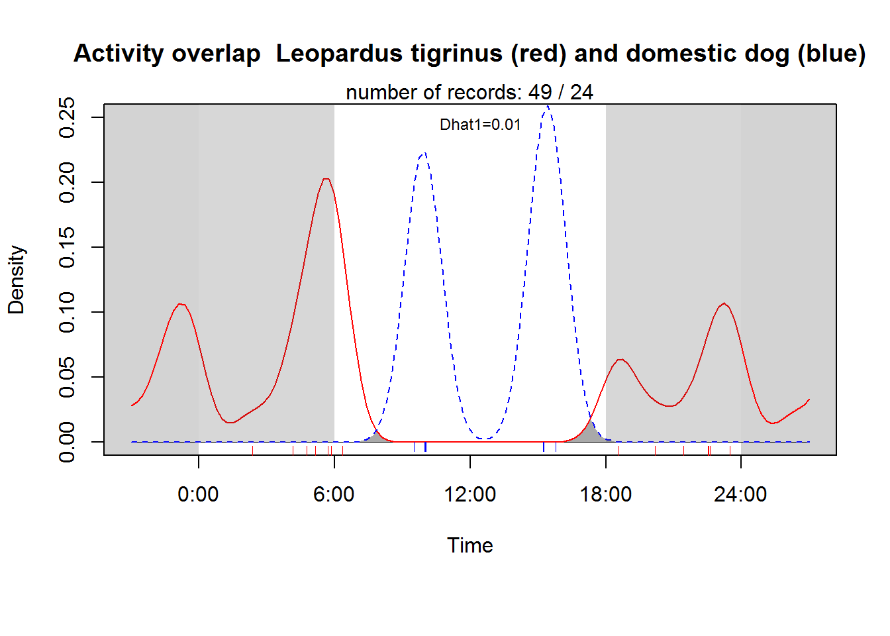
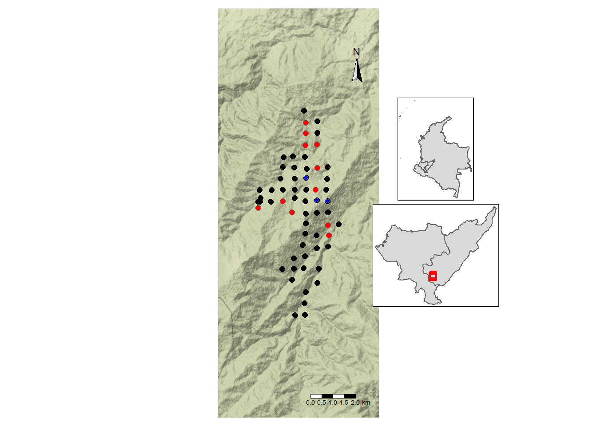

library(tidyverse) # maneja datos
library(mapview) # mapas facil
library(readxl) # leer datos
library(lubridate) # fix dates
library(sf) # make vector maps
library(camtrapR) # to get activity graph
library(raster) # to get some geographical data and use extent
library(tmap) # make nice raster maps
library(tmaptools) # to use the read_osm function
library(OpenStreetMap) # get tiles from OSM
library(GADMTools) # to get deptos
library(grid) # print options
source("D:/BoxFiles/Box Sync/CodigoR/tigrinus/R/organizadato.R")Activity
cargar paquetes
cargar datos
Huila_data <- read_delim("D:/BoxFiles/Box Sync/CodigoR/tigrinus/data/huila_merged.csv",
delim = ";", escape_double = FALSE, col_types = cols(camera_trap_start_date = col_character()), trim_ws = TRUE)mapa casas
##### read SHP ####
# casas <- st_read("D:/BoxFiles/Box Sync/CodigoR/tigrinus/data/Casas_1-point.shp")
# casas <- read_csv("D:/BoxFiles/Box Sync/CodigoR/tigrinus/data/casas.csv")
# casas_shp <- st_as_sf(casas, coords = c("lon", "lat"), crs = "EPSG:4326")
# st_write(casas_shp, "D:/BoxFiles/Box Sync/CodigoR/tigrinus/data/casas.shp")
# casas_cocha <- matrix (c(-0.98924, -77.15632,
# -0.96788, -77.15383,
# -0.97283, -77.16010,
# 1.01544, -77.17456,
# 1.01326, -77.17977,
# 1.02510, -77.17050,
# 1.02753, -77.16778,
# 1.03276, -77.16458,
# 1.03726, -77.16038,
# 1.04351, -77.16407,
# 1.05096, -77.15198,
# 1.05954, -77.14333,
# 1.06092, -77.13724,
# 1.06301, -77.12153,
# 1.05785, -77.11739,
# 1.01819, -77.12116,
# 1.01184, -77.09363),
# nrow = 17, ncol = 2, byrow = TRUE )
casas_shp <- read_sf("D:/BoxFiles/Box Sync/CodigoR/tigrinus/data/casas.shp")Crerar matrices para unmarked
### Fix tables to use the function f.matrix.creator2
Huila_data$binomial <- Huila_data$"Genus Species" #str_c (Huila_data$Genus, "_", Huila_data$Species)
# fix Huila_data
# fix dates
Huila_data$camera_trap_start_date <- ymd(Huila_data$camera_trap_start_date)
Huila_data$camera_trap_end_date <- ymd(Huila_data$camera_trap_end_date)
#fix cams
Huila_data$camera_trap <- Huila_data$"Depolyment Location ID"
# fix photo date
Huila_data$Photo_Date <- Huila_data$"Date_Time Captured"
#### make sf object
datos.raw_sf <- st_as_sf(Huila_data, coords = c("Longitude Resolution", "Latitude Resolution"), crs = "EPSG:4326")
camaras <- datos.raw_sf # st_transform (datos.raw_sf, "+proj=longlat +ellps=GRS80 +no_defs")
# camaras_16 <- camaras %>% filter (Year =="2016" ) # & Year <="2017")
# camaras_17 <- camaras %>% filter (Year =="2017" ) # & Year <="2017")
# Add column to get activity graph using activityDensity from camtrapR
# Add column to get activity graph using activityDensity from camtrapR
camaras$fecha <- as.POSIXlt(datos.raw_sf$"Date_Time Captured", format="%Y/%m/%d %H:%M:%S")
# add species name column to us the function activityDensity
camaras$DateTimeOriginal <- as.character(as.POSIXlt(Huila_data$"Date_Time Captured", format="%d/%m/%Y %H:%M:%S")) # as.character(camaras$DateRecord)
# camaras_17$DateTimeOriginal <- as.character(camaras_17$DateRecord)
camaras$Species <- camaras$binomial
#funcion para crear todas las tablas de datos
all_data <- f.matrix.creator2 (Huila_data)
(sp.names <- names(all_data)) # ver lass especies y en que lista esta cada una [1] NA "Dasyprocta punctata"
[3] "Dasypus novemcinctus" "Cuniculus paca"
[5] "Penelope unknown" "Leopardus tigrinus"
[7] "Tinamus unknown" "Arremon brunneinucha"
[9] "Tapirus pinchaque" "Eira barbara"
[11] "Nasuella olivacea" "Sciurus unknown"
[13] "Tinamus osgoodi" "Geotrygon frenata"
[15] "Didelphis pernigra" "Buteo swainsoni"
[17] "Turdus unknown" "Penelope montagnii"
[19] "Puma concolor" "Aulacorhynchus prasinus"
[21] "Mazama rufina" "Nothocercus bonapartei"
[23] "Chamaepetes goudotii" "Microsciurus unknown"
[25] "Conepatus semistriatus" "Mustela frenata"
[27] "Leopardus wiedii" "Leopardus unknown"
[29] "Momotus unknown" "Odontophorus hyperythrus"
[31] "Pardirallus nigricans" "Grallaria unknown"
[33] "Turdus fulviventris" "Didelphis unknown"
[35] "Tremarctos ornatus" "Campephilus pollens"
[37] "Odontophorus unknown" "Grallaria ruficapilla"
[39] "Ochthoeca cinnamomeiventris" "Arremon unknown"
[41] "Grallaria gigantea" "Grallaricula flavirostris"
[43] "Canis lupus familiaris" "Leopardus pardalis"
[45] "Geotrygon unknown" "Margarornis stellatus"
[47] "Momotus momota" "Grallaricula nana"
[49] "Atlapetes leucopis" # Tigrinus es lista 6Actividad del tigrillo y perro
activityOverlap (recordTable = camaras,
speciesA = "Leopardus tigrinus",
speciesB = "Canis lupus familiaris",
writePNG = FALSE,
plotR = TRUE,
addLegend = FALSE,
legendPosition = "topleft",
createDir = FALSE,
pngMaxPix = 1000,
linecol = c("red", "blue"),
linewidth = c(1,1),
linetype = c(1, 2),
olapcol = "darkgrey",
add.rug = TRUE,
extend = "lightgrey",
ylim = c(0, 0.25),
main = paste("Activity overlap ",
"Leopardus tigrinus (red)" , "and",
"domestic dog (blue)") )
rect(0, 0, 6, 0.5, col= rgb(0.211,0.211,0.211, alpha=0.2), border = "transparent")
rect(18, 0, 24, 0.5, col= rgb(0.211,0.211,0.211, alpha=0.2), border = "transparent")
# save tigrinus only to hard disk.
## turn on graphics device
png(file = "D:/BoxFiles/Box Sync/CodigoR/tigrinus/fig/tigrinus_activity2.png", width = 1200, height = 700, res = 150)
par(mar = c(5, 4, 3, 3) + 0.1)
activityDensity (recordTable = camaras,
species = as.character(sp.names[sp_number=6]))
rect(0, 0, 6, 0.5, col= rgb(0.211,0.211,0.211, alpha=0.2), border = "transparent")
rect(18, 0, 24, 0.5, col= rgb(0.211,0.211,0.211, alpha=0.2), border = "transparent")
##turn off graphics device
dev.off( )png
2 Mapa del tigrinus (rojo) y el perro (azul)
tigrinus <- filter(camaras, Species=="Leopardus tigrinus")
by_sp <- camaras %>% group_by(Species) %>% tally()
by_sp_tigrinus <- tigrinus %>% group_by("Depolyment Location ID") %>% tally()
names(by_sp_tigrinus) <- c("Predio", "Fotos tigrinus", "geometry")
dog <- filter(camaras, Species=="Canis lupus familiaris")
by_sp <- camaras %>% group_by(Species) %>% tally()
by_sp_dog <- dog %>% group_by("Depolyment Location ID") %>% tally()
names(by_sp_dog) <- c("Predio", "Fotos Dog", "geometry")
colombia <- gadm_sf_loadCountries("COL", level=1, basefile="./")
collimit <- gadm_sf_loadCountries("COL", level=0, basefile="./")
deptos <- gadm_subset(colombia, regions=c("Huila", "Cauca"))
# get the extent of cameras
ventana <- bb(camaras, ext=2) # ext=2 increase window by 2
Huila_osm1 <- tmaptools::read_osm(ventana, type="stamen-terrain", mergeTiles = TRUE)
########## figure 1
data_box <- ventana # st_as_sfc(st_bbox(cams_loc_QR_sf)) #bounding box
# pal = mapviewPalette("mapviewTopoColors")
# get fondo de osm
andes_osm1 <- read_osm(ventana, zoom = NULL, type="stamen-terrain", mergeTiles = TRUE) # type puede ser tambien bing, osm # type puede ser tambien bing, osm
colombia <- gadm_sf_loadCountries("COL", level=1, basefile="./")
collimit <- gadm_sf_loadCountries("COL", level=0, basefile="./")
deptos <- gadm_subset(colombia, regions=c("Huila", "Cauca"))
depto_window <- qtm(andes_osm1) +
tm_shape(camaras) +
tm_dots(col = "black", size = 0.25,
shape = 16, title = "Sampling point", legend.show = TRUE,
legend.is.portrait = TRUE,
legend.z = NA) +
tm_shape(by_sp_tigrinus) + tm_symbols (col="red", size = 0.25) +
tm_shape(by_sp_dog) + tm_symbols (col="blue", size = 0.15) +
tm_layout(scale = .9) +
# legend.position = c(.78,.72),
# legend.outside.size = 0.1,
# legend.title.size = 1.6,
# legend.height = 0.9,
# legend.width = 1.5,
# legend.text.size = 1.2) +
# legend.hist.size = 0.5) +
tm_legend(position = c("left", "bottom"), frame = TRUE,
bg.color="white") +
tm_layout(frame=F) + tm_scale_bar() + tm_compass(position = c(.75, .82), color.light = "grey90")
dep_map <- tm_shape(deptos$sf) + tm_polygons() +
tm_shape(camaras) + tm_symbols(shape = 0, col = "red", size = 0.25)
col_map <- tm_shape(collimit$sf) + tm_polygons() + tm_shape(deptos$sf) + tm_polygons()
##### print all
depto_window
print(dep_map, vp = viewport(0.73, 0.40, width = 0.25, height = 0.25))
print(col_map, vp = viewport(0.73, 0.65, width = 0.25, height = 0.25))